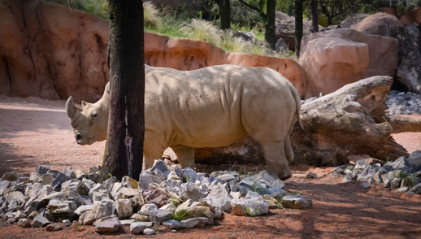
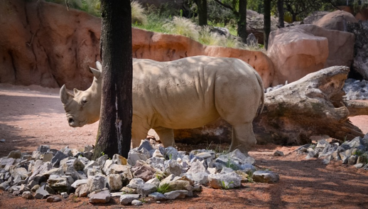
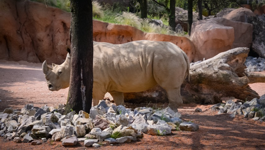
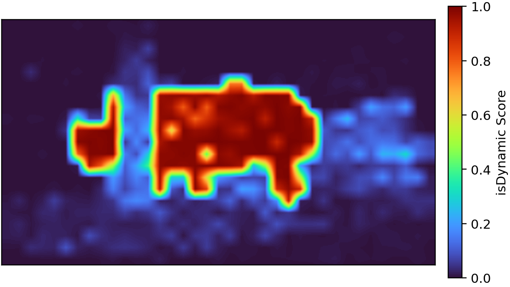
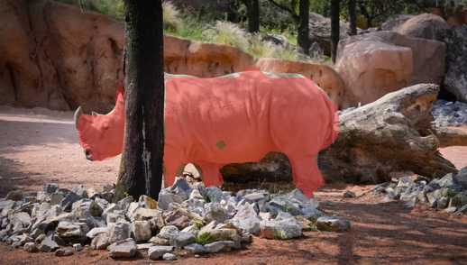
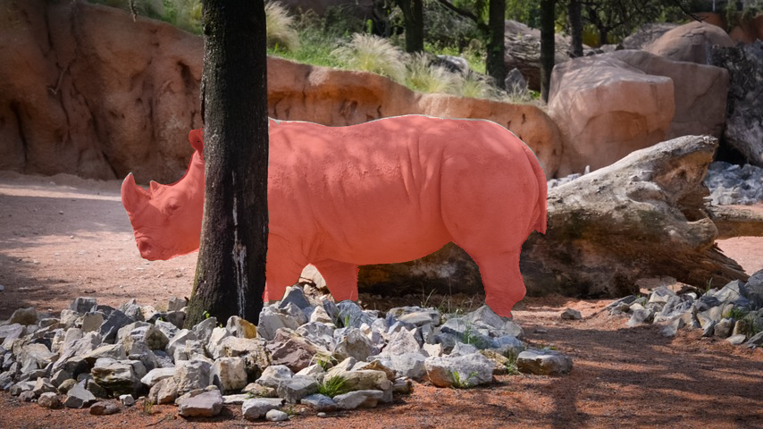

Probing-based Motion Distillation (PMD): from frozen geometry to motion segmentation.
Abstract
Feed-forward 3D foundation models have recently reshaped multi-view reconstruction, yet dynamic 4D understanding still often relies on large-scale motion supervision or hand-crafted, architecture-specific heuristics. We ask whether motion-relevant information is recoverable from frozen 3D tokens using low-capacity, rank-restricted probes trained with limited source-domain supervision. Across three representative backbones, supervised probing exposes static–dynamic discriminative information, and a shuffled-label control tests selectivity to the correct token–label correspondence. Rank-restricted and spectral analyses on π3X characterize compactness of the supervised probe-induced representation. Building on this finding, Probing-based Motion Distillation (PMD) converts pairwise motion-state compatibility against a fixed anchor into dense motion scores and coarse masks, with optional SAM2 refinement. Trained on 160 YouTube-VOS videos using a single 16 GB GPU, PMD transfers zero-shot to DAVIS, SegTrackv2, and FBMS-59. Its strongest coarse variant is competitive with heavier motion decoders, while optional refinement improves mask quality. These results support data-efficient supervised recovery of motion-relevant information from frozen 3D representations.
01 / Qualitative evaluation
Qualitative results
Three complete sequences from the paper's unseen-category examples, with continuous motion scores, coarse PMD masks, and optional SAM2 refinement.
Rhino behind a foreground tree
InputPMD coarse
Pi3X-PMD, rank 8, all 18 inter-frame blocks. Playback is for visualization, not a runtime measurement.
02 / Probing-based motion distillation
Method overview
PMD segments moving objects from frozen 3D representations using a low-rank pairwise probe.
01 Frozen 3D backbone



Input frames↓3D foundation modelH = [h0, h1, …, hN]Target-frame tokens
Extract target-frame tokens from selected intermediate layers, based on the layer-wise probing results. The token group is fixed per backbone, and scores are averaged across all its layers.
02 Low-rank quadratic probe
The anchor a = 0 lies in Pi3X's padded border and is static by design.
Train the rank-8 probe to predict whether two tokens from the same target frame share the same motion state, using 160 YouTube-VOS videos. At inference, compare each token hi with the fixed anchor ha; compatibility with the static anchor gives the static score.
03 Coarse motion mask

Dynamic scores↓

Coarse mask
Average dynamic scores across the selected blocks, bilinearly upsample, and binarize using the same thresholding rule across benchmarks.
04 Optional SAM2 refinement
Coarse mask↓SAM2↓

Refined mask
Use region masks generated from PMD scores as SAM2 prompts to refine mask extent and boundaries. This stage is optional and separate from probe training.
Pi3X-PMD outputs for the same target frame. Token vectors and the probe diagram are schematic.
03 / Empirical analysis
Representation analysis
Layer-wise motion decodability on Pi3X, DA3, and DUSt3R. Click the figure to enlarge.
PCA here visualizes the supervised probe-induced subspace. PMD recovers motion-relevant information for static-dynamic separation.
04 / Experimental protocol
Reproduce
Hugging Face hosts the trained PMD probes and source RGB/masks. Bash scripts cover training and evaluation.
Exported tokens prepare probe training and token-level evaluation. Mask inference runs the frozen backbone on images and decodes the full target-frame token grid. Pre-exported test tokens are not required for mask inference.
Benchmark transfer covers DAVIS, SegTrackv2, and FBMS-59, with no target-benchmark fine-tuning.
Reference
Citation
@inproceedings{zhang2026promo3d,
title={ProMo3D: Probing Motion Cues in Frozen 3D Foundation Models},
author={Zhang, Xiaoang and Kiray, Mert and Velikova, Yordanka
and Biswanath, Manoj and Busam, Benjamin},
booktitle={Advances in Neural Information Processing Systems},
year={2026},
url={https://neurips.cc/virtual/2026/poster/151302}
}